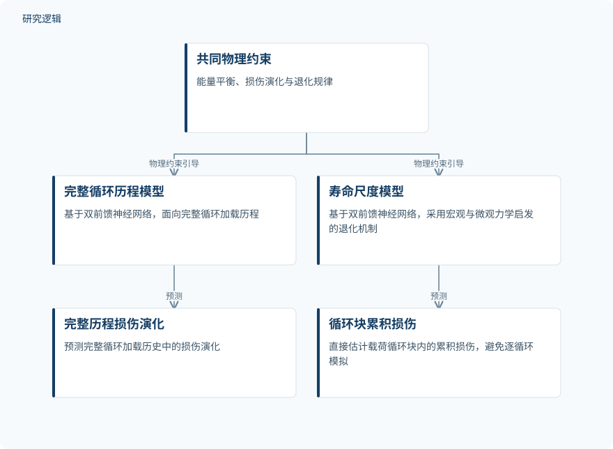

摘要解读
物理约束下疲劳寿命时间尺度均匀化与循环损伤演化的机器学习加速框架
ML‐Accelerated Framework for Fatigue Life‐Timescale Homogenization and Cyclic Damage Evolution Under Physics Constraints
解读更新 2026-11-10 11:51 · 依据公开摘要整理，未核验全文细节
高周疲劳寿命预测的难点，不只是描述损伤如何发展，还在于如何避免逐循环计算的巨大成本。这项研究用物理约束引导机器学习，分别预测完整循环历程与寿命尺度上的损伤，为理解疲劳分析如何兼顾计算效率与物理一致性提供了切入点。
文章目录
高周疲劳为何难以逐循环算到底
飞机、桥梁和风力机等大型系统的寿命评估，需要面对复杂载荷下的疲劳损伤累积、裂纹萌生与跨尺度扩展。摘要指出，当载荷达到数百万次循环时，直接模拟的计算代价使其难以实施。因此，研究关注的不仅是损伤预测本身，也包括如何跨越漫长的循环时间尺度。
以物理约束连接两种损伤预测尺度
研究提出一个基于物理的机器学习框架，包含两个模型：第一个预测完整循环加载历程中的损伤演化；第二个面向寿命尺度，通过宏观与微观力学启发的退化机制，估计载荷循环块内的累积损伤。两者承担不同尺度的预测任务，摘要并未说明它们必须串联运行。
两个模型均基于双前馈神经网络，并受到能量平衡、损伤演化和退化规律等物理约束的引导。框架的设计目标，是让预测不仅拟合损伤变化，还保持物理一致性、可解释性，并能够推广到未见材料与加载条件。
依据摘要整理的双尺度损伤预测示意


概括共同物理约束与两个模型各自的预测任务，不表示两者必须串联，也不表示论文原图。
下载 SVG图示关系说明
实线表示相邻阶段的信息流，虚线表示跨阶段联系或反馈。
共同物理约束 → 完整循环历程模型：物理约束引导；共同物理约束 → 寿命尺度模型：物理约束引导；完整循环历程模型 → 完整历程损伤演化：预测；寿命尺度模型 → 循环块累积损伤：预测
循环块预测带来最高约2700倍加速
摘要报告，验证研究中的模型能够准确再现不同加载历程和材料参数下的非线性损伤演化。寿命尺度模型直接预测较大循环块上的损伤，无需逐循环推进；相较传统增量式疲劳分析，计算加速最高约2700倍，同时与参考解保持高度一致。这里的加速对应摘要所述定量比较，不能理解为所有材料和工况都能达到同样水平。
摘要尚不能界定验证与加速的适用边界
当前摘要未交代训练与验证样本规模、数据来源、具体材料类别、载荷谱覆盖范围，以及未见条件的划分方式；也未给出误差指标、参考解构成、计时口径和硬件条件。因此，仅凭摘要无法判断加速结果的可比性与泛化边界，也不能确认其是否已在实际结构监测或运维场景中验证。这些是资料尚未提供的信息，不代表论文没有开展相关工作。
阅读启发：关注跨循环预测如何保持可信
阅读启发：值得进一步阅读的是，循环块预测如何遵守能量与退化约束，以及模型在未见材料、不同加载历程下如何接受检验。对于结构疲劳与智能运维读者，还应区分“快速计算损伤”与“可直接支持维护决策”：摘要展示了前者的潜力，但尚不足以确认后者的实际效果。
以上为本站阅读启发与建议，不是论文已验证的结论。